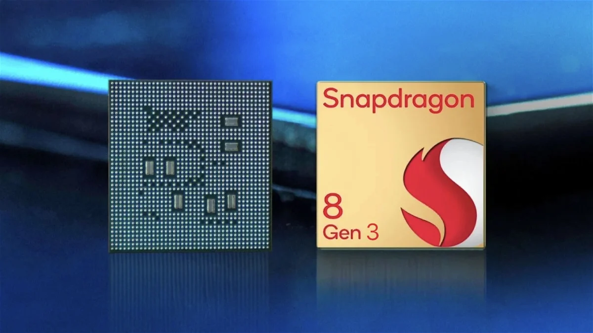
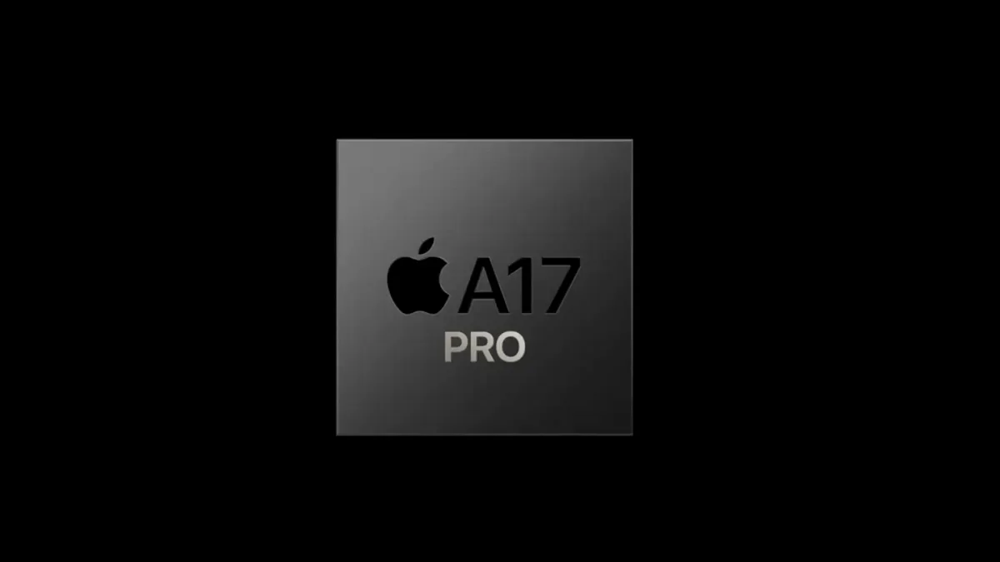
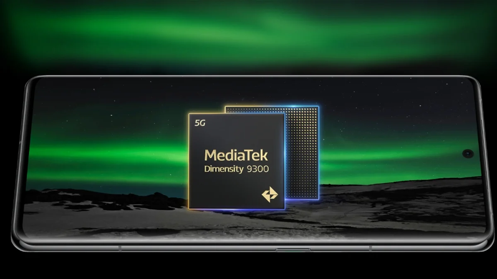

Los 4 Mejores CPU Hasta La Fecha
Qualcomm Snapdragon 8 Gen 3
Se trata de la última entrega de la serie Snapdragon 8 de Qualcomm, y la más potente de la historia. El Snapdragon 8 Gen 3 trajo consigo importantes mejoras de eficiencia y rendimiento con respecto al Snapdragon 8 Gen 3.
Apple A17 Pro
La californiana Apple sigue apostando por procesadores diseñados por ella misma, y desarrollados bajo la marca "A". Este año, es el turno del Apple A17 Pro, un chip fabricado empleando una nueva litografía de ultravioleta extremo (UVE) de 3 nanómetros. Ha demostrado ser uno de los más potentes y avanzados del mercado, además de ofrecer una eficiencia energética nunca antes vista en un chip de la marca.
Samsung Exynos 2400

Samsung genera polémica al dotar a sus últimos dispositivos estrella de un procesador distinto dependiendo del mercado al que estén dirigidos.Un procesador algo distinto al Snapdragon 8 Gen 3. Pero la realidad es que en esta generación las diferencias con respecto al modelo de Qualcomm son mucho menos apreciables. En ambos casos hablamos de procesadores de 4 nanómetros y 8 núcleos, que utilizan la arquitectura Cortex X4 en su núcleo de alto rendimiento.
MediaTek Dimensity 9300
El MediaTek Dimensity 9300 se trata de un chip fabricado en formato de cuatro nanómetros, destinado a dar vida a los móviles de gama alta más poderosos de todo el mercado. Utiliza núcleos Cortex-X4 de alto rendimiento y una poderosa GPU ARM Immortalis-G720 MC12. Esta CPU tiene una configuración de núcleos de 1+3+4 con un núcleo Cortex-X2 a 3.05 Ghz, tres núcleos Cortex-A710 a 2.65 Ghz y otros cuatro núcleos Cortex-A510 a 1.8 GHz. Según datos de la marca, la CPU aumenta en un 35% el rendimiento general y en un 60% la eficiencia energética respecto a la generación previa.